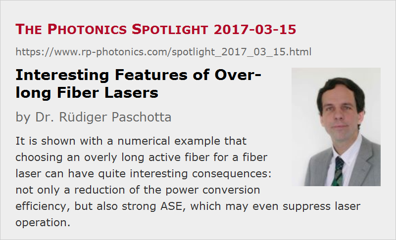

Interesting Features of Over-long Fiber Lasers
Posted on 2017-03-15 as a part of the Photonics Spotlight (available as e-mail newsletter!)
Permanent link: https://www.rp-photonics.com/spotlight_2017_03_15.html
Author: Dr. Rüdiger Paschotta, RP Photonics Consulting GmbH
Abstract: It is shown with a numerical example that choosing an overly long active fiber for a fiber laser can have quite interesting consequences: not only a reduction of the power conversion efficiency, but also strong ASE, which may even suppress laser operation.

Normally, the length of the active fiber (rare-earth-doped fiber) of a fiber laser is chosen such that it is sufficient to efficiently absorb the pump radiation, but not much more than that. It is interesting, however, to consider what happens if one uses an overly long fiber, having much more pump absorption than required.
The simplest case is that of a four-level gain system, where there is no reabsorption at the laser wavelength. Here, using an overly long gain fiber does not necessarily have serious effects. Most of the fiber may actually stay nearly unpumped, so there is no gain there, but also no absorption. One could normally expect the following consequences:
- Parasitic losses in the fiber e.g. due to Rayleigh scattering are increased. That becomes relevant only for quite long fibers, however.
- The resonator round-trip time becomes longer – which for continuous-wave laser is usually not particularly important, although the relaxation oscillations become slower and the mode frequency spacing is reduced. So it becomes more difficult to obtain single-frequency operation, for example.
- For high intracavity power levels, one may run into a situation where stimulated Raman scattering becomes important.
Example: Long Yb-doped Fiber Laser
Quite interesting things occur for quasi-three-level gain media – which are actually most common in the area of rare earth doped fibers. For example, let us consider a single-mode ytterbium-doped fiber laser pumped at 940 nnm, while a fiber Bragg grating with 10% peak reflectance at 1030 nm used as the output coupler fixes the laser wavelength. We begin with an only 2 m long fiber, and the following diagram shows the distribution of optical powers within the fiber (calculated with the RP Fiber Power software):
If we now increase the fiber length to 20 m, the result is quite different:
The pump radiation is still absorbed within the first 2 meters, and the signal gain is high in this region. In the unpumped section of the fiber, however, a substantial part of the signal power is absorbed, resulting in a reduced output power.
Interestingly, the decay of pump power in that region is not exponential but approximately linear. This is because the substantial signal power strongly saturates the reabsorption. Essentially, it rises the Yb excitation to a nearly constant level where the signal absorption gets small; the signal power loss per meter is then determined essentially by how much fluorescence the partially excited fiber generates. And that excitation level depends only weakly on the laser power as soon as strong saturation occurs.
Amplified Spontaneous Emission
But wait a moment – we also need to consider amplified spontaneous emission (ASE). We have a lot of reabsorption at the laser wavelength of 1030 nm, but much less at longer wavelengths, where there is still substantial emission. So we have to consider broadband ASE emission at longer wavelengths.
It turns out that in the previous example the ASE powers are still too small to significantly influence the signal output. However, if we increase the fiber length to 40 m, this changes completely – even if there are no end reflectivities whatsoever for ASE:
The following diagram shows more clearly what happens in the first 10 m of fiber:
We see that about half of the pump power is converted to backward ASE. There is also significant forward ASE, but most of that is reabsorbed before it reaches the output end; we get only 0.34 mW of forward ASE out of the fiber. And there is no signal power any more – we don't reach the laser threshold any more! Also note the curious decay of the pump power; that is related to the saturation caused by forward and backward ASE.
The following diagram shows the ASE spectrum in forward and backward direction for the previous case:
Interestingly, backward ASE has much of the power in the peak around 975 nm, whereas that peak is completely missing in forward ASE because of the strong reabsorption.
Quite obviously, it would be close to impossible to analyze such things without laser modeling. Even if you have a pretty good understanding of laser physics, the operation details of such devices are just too complicated to understand them without numerical simulations.
Passive Q switching?
Note that the unpumped section of fiber can actually be regarded as an effective saturable absorber: the absorption is strongly reduced by stimulated emission related to the laser radiation. So one may actually think that this could eventually lead to passive Q switching of the laser, i.e., the generation of intense laser pulses. This is not true, however. The point is that a high optical laser power would saturate not only the absorption, but also the laser gain, which has the same saturation power. For Q switching, one would require a saturable absorber having a substantially lower saturation power than that of the gain.
Spatial Hole Burning
A quite interesting effect is that under certain circumstances one can obtain single-frequency operation by exploiting the reabsorption in an overly long gain fiber. I have demonstrated this about 20 years ago, published it Optics Letters (R. Paschotta et al., “Single-frequency ytterbium-doped fiber laser stabilized by spatial hole burning”, Opt. Lett. 22 (1), 40 (1997)) and also discussed it in the Photonics Spotlight. Therefore, it does not need to be explained again here.
Conclusions
In conclusion, we see that using an over-long active fiber can have serious consequences in case of a quasi-three-level gain fiber. The strong reabsorption in the unpumped section of fiber raises the laser threshold and decreases the efficiency, and finally leads to emission of strong ASE instead of the wanted laser emission. Under certain circumstances, spatial hole burning can also have interesting effects.
Well, if we would not “nail down” the laser emission wavelength with a fiber Bragg grating, but rather use a wavelength-independent output coupler reflectivity, the laser would automatically emit at longer wavelengths, effectively choosing a compromise between the strengths of emission and reabsorption. That automatic choice of output wavelength could also be simulated; I took this as the topic of the software newsletter of 2017-03-28.
This article is a posting of the Photonics Spotlight, authored by Dr. Rüdiger Paschotta. You may link to this page and cite it, because its location is permanent. See also the RP Photonics Encyclopedia.
Note that you can also receive the articles in the form of a newsletter or with an RSS feed.
Questions and Comments from Users
Here you can submit questions and comments. As far as they get accepted by the author, they will appear above this paragraph together with the author’s answer. The author will decide on acceptance based on certain criteria. Essentially, the issue must be of sufficiently broad interest.
Please do not enter personal data here; we would otherwise delete it soon. (See also our privacy declaration.) If you wish to receive personal feedback or consultancy from the author, please contact him e.g. via e-mail.
By submitting the information, you give your consent to the potential publication of your inputs on our website according to our rules. (If you later retract your consent, we will delete those inputs.) As your inputs are first reviewed by the author, they may be published with some delay.
|  |
If you like this page, please share the link with your friends and colleagues, e.g. via social media:
These sharing buttons are implemented in a privacy-friendly way!